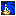
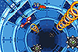

| Rings |
[Have at least one with you at all times.]
If you have a ring available in an Act, you will not die even if you take damage from traps or enemy attacks. However, all the rings you had will be scattered all over the field, so pick them up quick! |
| Checkpoints |
[Restart point after death.]
Checkpoints are placed at various locations in an Act. If you touch these checkpoints, you'll restart from that point if you die. |
| 1-ups |
[Increases life count.]
If you collect 100 rings or get a 1-UP item, you'll get a 1-up. As is tradition, for every 50,000 points, you'll get a 1-up. |
| Item Box |
[Break them to get the item.]
Even if you find an item, you cannot get it unless you destroy the item box. Use your attacks to destroy it and get the item inside. |
| Special Stage |

[Let's collect the rings scattered around.]
Special Stages can be accessed by using special springs in an Act. If you collect the specified number of rings, you get a Chaos Emerald. |
| Death |
[There are many dangers in an Act.]
If you take damage without a ring or a shield, you will die and lose a life.
(Falling down a pit and drowning will kill you with/without protection.) |
| Continues |
[Let's try this Act again.]
Your life count will go down as you die, and when it reaches zero, you'll get a Game Over. But if you have enough continues left, you can try again. |
|